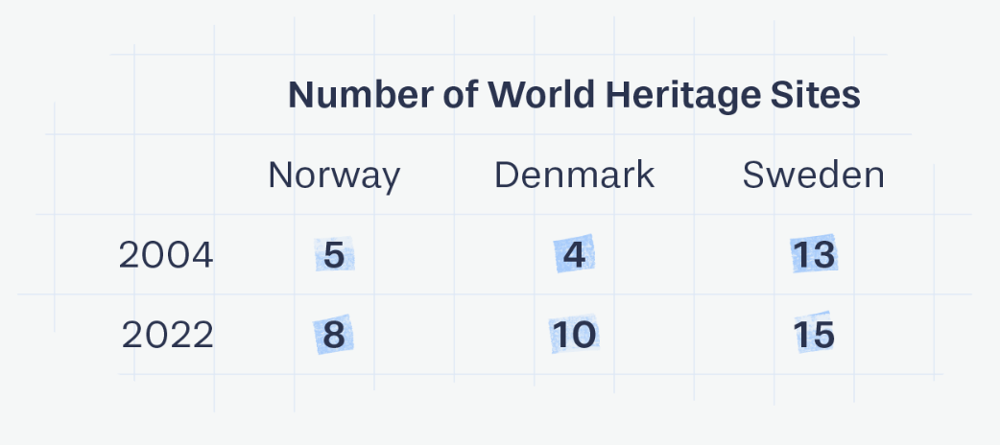
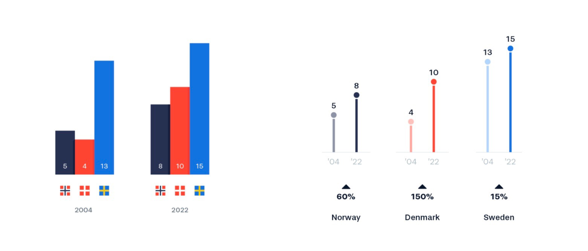
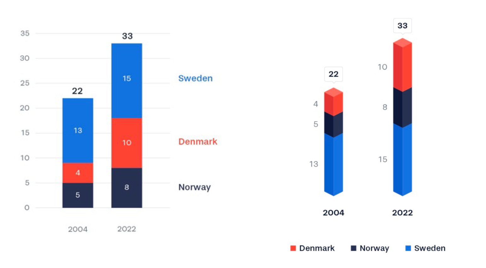
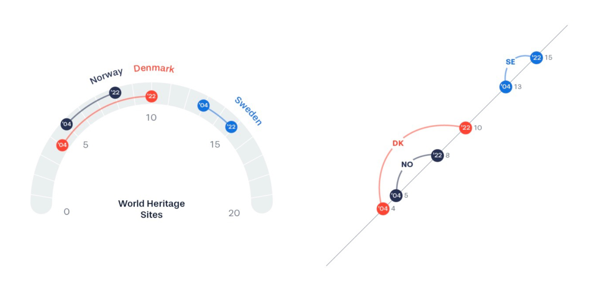
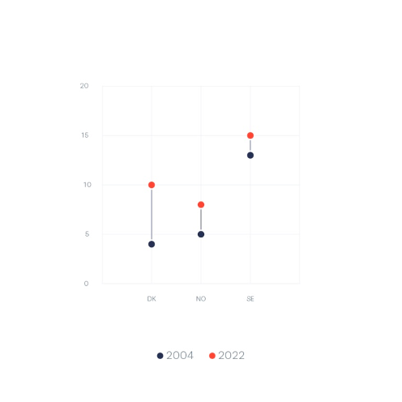

分享最近看到的一组有意思的数据可视化。 由 ferdio 出品的，主题为「1 dataset 100 visualizations」。他们选用了一组非常简单的数据，用一百种不同的图进行可视化，借此「展示数据可视化的多样性和复杂性，以及如何使用有限的视觉元素来讲述不同的故事」。尽管使用了相同的原始数据，但每张图都有其独特的重点，传递出的信息也不尽相同。 
我计划从中选几个有代表性的图，并尝试解读这种可视化突出了数据怎样的特点。 先从比较常见的开始，下面两张图都是将数值编码成了长度，算是最常见的柱状图了。依照组合顺序的不同，左图将相同年份的数据摆在一起，更能突出相同年度中，几个国家之间谁的数量更多；右边的图将同一国家两个年度的数据放在一起展示，更能体现出每个国家世界遗产数量都在上升这个趋势。  与此同时，假如使用堆积柱状图，则突出的是两个年度，这三个国家世界遗产总量的增长趋势。  另外，上面几张图中还有一个特点，它们都将各个部分的具体数值直接标注在了对应的区域。这种方式蛮好，可以减轻看图时「视线需要在坐标轴和数据间反复切换，估算数值」所产生的负担。在这样处理的图中，即使完全删去纵坐标轴也不影响数据解读。
下面这两张图则是让我比较眼前一亮的（尤其是下面第二张），仔细去看，它们虽然形状不太相似，但实际是几乎一样的两张图——用在一条直线上的位置标记多个数据点的数值。我觉得它们好在以下几个方面：
- 清晰明了，无论是比较同一年度各个国家的数值（点的位置），还是增长幅度（两点间的连线长度）都一目了然
- 节约空间，如果把第二张图放平，只占据柱状图单个柱子的空间，就足以展示六条柱子所传达的信息
- 可以体现出跨越性的增长与压倒性的优势：丹麦（橙色）的世界遗产数量从04年的不如挪威（深蓝色），到22年超越挪威，这种跨越性的增长趋势在这两张图中一目了然，反观上面的几个柱状图，都需要在柱子长度间反复多次比较数值，才能观察到这种变化；另一方面，瑞典（蓝色）无论哪个年度的数量都远超另外两个人国家，这个结论在前面的图中也能通过比较得出，但在这张图中尤其清晰。 究其原因，这两张图将本身分散的长度、位置信息合并在了同一条线上，使得相互间的比较更为容易。但它也有一些缺点：
- 假如是多个时间点，比如三个年度，在这张图中就容易造成混乱
- 这批数据的变化趋势一致，都是22年的数值高于04年，假如在不同国家间，有的数量增加，有的数量减少，可能就需要带箭头的线段才能表示年份间的变化趋势。  同样，假如不放在一条直线上，而是按位置分开的图也有，比如下面这张图。上面提到的一些优点，比如增长幅度的大小、丹麦超越性的增长、瑞典压倒性的数量也都可以看到，但少了在原位的国家名称与数量标注，感觉就没那么醒目了。但这张图也有它的优点：使用颜色来表示年份而不是国家，假如有国家的数量下降了，在这张图上就会很好地展现出来。  这次就先写这些，溜了溜了。 如果对更多可视化感兴趣，或是想找找新的画图思路，可以直接去原网站查看可视化结果。